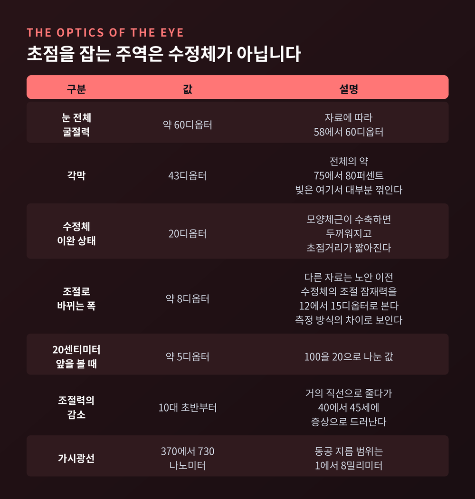
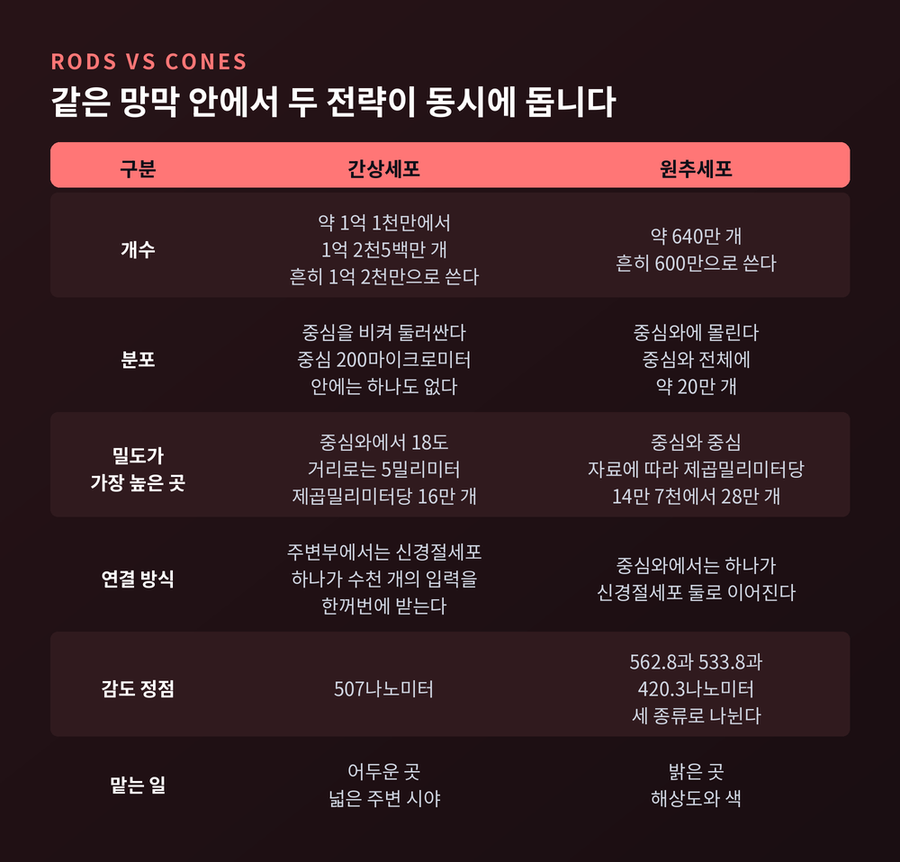
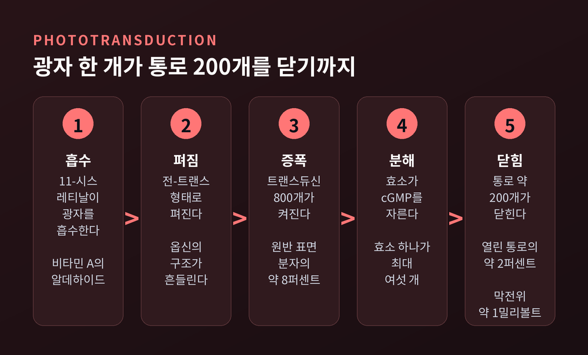
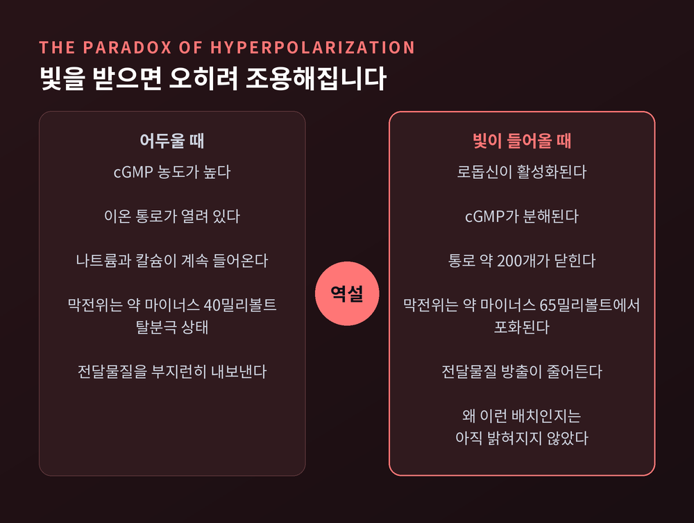
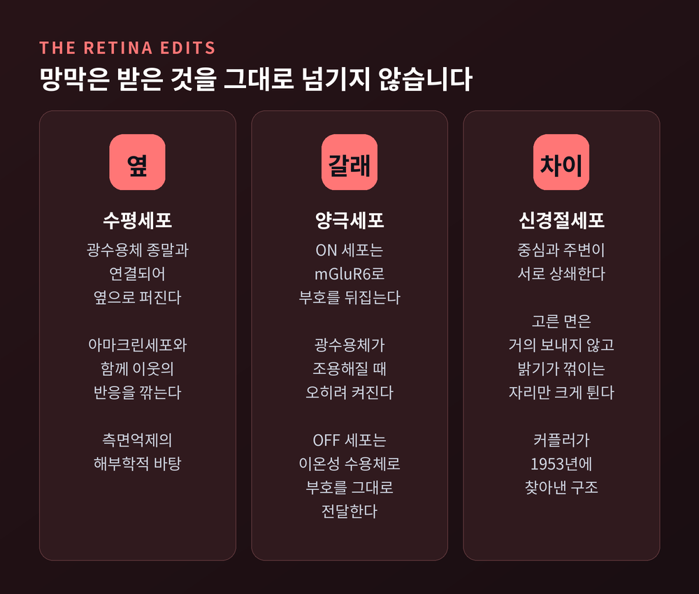
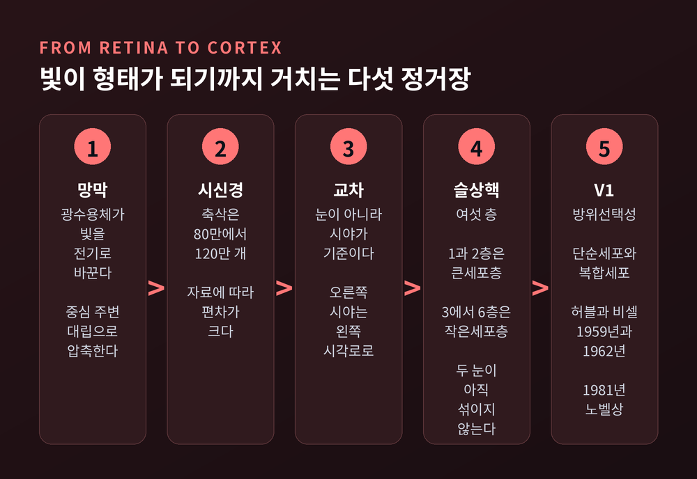

시각의 원리, 빛이 망막의 광수용체를 거쳐 영상이 되기까지
오늘은 시각의 원리를 처음부터 끝까지 따라가 보려 합니다. 결론부터 말씀드리면, 눈은 카메라가 아닙니다. 빛은 각막에서 꺾이고, 망막에서 분자 하나의 모양 변화로 바뀌고, 다시 전기 신호가 되어 뇌로 갑니다. 그 사이에 망막은 밝기 자체가 아니라 밝기의 차이만 골라 보내고, 시각피질은 그 차이를 선과 모서리로 다시 짭니다. 아래 수치는 모두 리서치 단계에서 확인한 자료에 근거한 것입니다.

각막이 43디옵터, 수정체가 20디옵터를 맡습니다
빛은 눈에 들어오자마자 각막에서 대부분 꺾입니다.
눈 전체의 굴절력은 약 60디옵터입니다. 이 가운데 각막이 43디옵터, 이완된 상태의 수정체가 20디옵터를 담당합니다. 다른 자료는 정시안의 총 굴절력을 58에서 60디옵터로 보고, 각막이 전체의 75에서 80퍼센트를 차지한다고 정리합니다. 두 자료가 가리키는 그림은 같습니다. 초점을 잡는 주역은 우리가 흔히 떠올리는 수정체가 아니라 각막입니다.
수정체가 맡는 일은 따로 있습니다. 가까운 것을 볼 때 모양체근이 수축하면 수정체가 두꺼워지고, 초점거리가 짧아지며 굴절력이 올라갑니다. 이것이 조절입니다. 20센티미터 앞의 글자를 읽으려면 대략 5디옵터의 조절이 필요합니다.
조절로 바뀌는 굴절력이 얼마인지는 자료마다 다릅니다. 약 8디옵터로 적은 곳도 있고, 노안 이전 수정체의 조절 잠재력을 12에서 15디옵터로 보는 곳도 있습니다. 측정 방식이 달라 생기는 차이로 보이며, 어느 한쪽이 옳다고 단정하기는 어렵습니다.
분명한 것은 이 능력이 젊을 때부터 이미 줄고 있다는 점입니다. 조절력은 10대 초반부터 거의 직선으로 감소하고, 40세에서 45세 무렵 증상으로 드러납니다. 노안은 어느 날 갑자기 오는 사건이 아니라 오래 진행된 곡선의 끝자락입니다.
1억 2천만 대 600만, 두 세포의 분업
망막에 닿은 빛을 받는 세포는 두 종류입니다.
간상세포는 약 1억 1천만에서 1억 2천5백만 개, 원추세포는 약 640만 개입니다. 여러 교육 자료가 이를 간상세포 1억 2천만 개, 원추세포 600만 개, 비율 20대 1로 정리합니다. 숫자만 보면 압도적인 다수는 간상세포입니다.
그런데 배치가 묘합니다. 원추세포는 중심와라는 아주 작은 웅덩이에 몰려 있습니다. 중심와 전체의 원추세포는 약 20만 개이고, 간상세포가 하나도 없는 중심 1도 안에만 1만 7천 5백 개가 들어 있습니다. 중심 200마이크로미터 안에는 간상세포가 전혀 없습니다.
간상세포는 반대로 중심을 비켜 둘러섭니다. 밀도가 가장 높은 곳은 중심와에서 18도, 거리로는 5밀리미터 떨어진 고리 모양 영역이고, 그곳의 밀도는 제곱밀리미터당 16만 개입니다.

연결 방식도 갈립니다. 중심와에서는 원추세포 하나가 신경절세포 둘로 이어집니다. 주변부에서는 신경절세포 하나가 수천 개의 간상세포 입력을 한꺼번에 받기도 합니다. 가운데는 정밀하게, 바깥은 민감하게. 같은 망막 안에서 완전히 다른 두 전략이 동시에 돌아가는 셈입니다.
덧붙이자면 중심와는 태어날 때 완성되어 있지 않습니다. 만 4세 이전에는 완전히 발달하지 않는다고 보고됩니다.
광자 하나가 이온 통로 200개를 닫습니다
여기서부터가 진짜 변환입니다. 빛이라는 물리 현상이 분자의 모양 변화로 번역되는 지점입니다.
광색소 안에는 비타민 A의 알데하이드인 레티날이 들어 있습니다. 평소에는 11-시스 형태로 굽어 있습니다. 광자 하나를 흡수하면 이 분자가 전-트랜스 형태로 펴집니다. 시각의 출발점은 이 한 번의 펴짐입니다.

이후는 연쇄 반응입니다. 모양이 바뀐 레티날이 옵신 단백질의 구조를 흔들고, 옵신이 트랜스듀신을 켜고, 트랜스듀신이 포스포다이에스터레이스를 켜고, 이 효소가 cGMP를 잘라냅니다. cGMP가 줄면 세포막의 통로가 닫힙니다.
증폭 규모가 인상적입니다. 빛에 활성화된 로돕신 한 개가 트랜스듀신 800개를 활성화합니다. 원반 표면 분자의 약 8퍼센트에 해당합니다. 트랜스듀신 하나는 효소 하나를 켜고, 효소 하나는 cGMP를 최대 여섯 개까지 분해합니다. 결과적으로 광자 한 개의 흡수가 이온 통로 약 200개를 닫습니다. 어두울 때 열려 있는 통로의 약 2퍼센트이고, 막전위로는 약 1밀리볼트의 변화입니다.
쓰고 난 분자는 버려지지 않습니다. 아레스틴이 활성 로돕신을 붙잡아 연쇄를 끊고, 떨어져 나온 전-트랜스 레티날은 망막색소상피로 옮겨져 11-시스 형태로 되돌려진 뒤 다시 돌아옵니다. 시각은 이 재활용 위에서 유지됩니다.
빛을 받으면 오히려 조용해집니다
감각 세포는 자극을 받으면 흥분한다고 배웁니다. 광수용체는 그 반대입니다.
어두울 때 광수용체의 막전위는 약 마이너스 40밀리볼트로 탈분극 상태입니다. 통로가 열려 있어 나트륨과 칼슘이 계속 들어옵니다. 이 상태에서 전달물질을 부지런히 내보냅니다. 조명이 밝아지면 막전위는 음의 방향으로 이동해 약 마이너스 65밀리볼트에서 포화됩니다. 빛을 받을수록 조용해지는 것입니다.

왜 이런 반대 방향 배치를 택했는지는 아직 밝혀지지 않았습니다. 표준 교과서도 그 이유는 알려져 있지 않다고 적어둘 뿐입니다. 뒤쪽 회로가 밝기 변화와 전달물질 방출량 사이의 일관된 관계만 확보하면 되기 때문에, 부호 자체는 문제가 되지 않는다는 설명이 붙어 있는 정도입니다.
또 하나 중요한 장치가 명순응입니다. 통로가 닫히면 세포 안 칼슘이 줄고, 칼슘이 줄면 cGMP를 다시 만드는 효소가 활발해지며 통로의 cGMP 친화도도 올라갑니다. 민감도를 스스로 낮추는 것입니다. 별빛이 제곱미터당 0.001칸델라, 햇빛이 1만 칸델라입니다. 천만 배가 넘는 범위를 같은 세포로 감당하려면 이 자동 감도 조절이 없어서는 안 됩니다.
망막은 밝기가 아니라 차이를 보냅니다
망막은 받은 것을 그대로 넘기지 않습니다. 이미 편집을 합니다.
양극세포는 두 갈래로 나뉩니다. ON 양극세포는 mGluR6라는 대사성 수용체를 써서 신호의 부호를 뒤집습니다. 광수용체가 조용해질 때 오히려 켜집니다. OFF 양극세포는 이온성 수용체를 써서 부호를 그대로 전달합니다. 밝아지는 쪽과 어두워지는 쪽을 따로 담당하는 두 채널이 여기서 갈라집니다.

옆으로 퍼지는 회로도 있습니다. 광수용체 종말은 수평세포와도 연결되어 있고, 수평세포와 아마크린세포는 망막을 가로질러 옆 세포의 반응을 깎습니다. 측면억제입니다.
그 결과가 중심-주변 대립수용장입니다. 스티븐 커플러가 1953년에 고양이 망막 신경절세포를 기록하면서 찾아낸 구조입니다. 커플러와 탤벗은 마취한 고양이의 망막 여러 지점에 크기가 다른 광점을 비추는 검안경을 만들었고, 신경절세포에 중심부를 흥분시키는 영역과 그것을 상쇄하는 주변부가 있다는 사실을 확인했습니다. 중심-주변 조직이라는 용어 자체가 이 논문에서 나왔습니다.
의미는 이렇습니다. 넓은 면을 고르게 비추면 중심과 주변이 서로 상쇄해 신호가 거의 나가지 않습니다. 반면 밝고 어두운 경계가 수용장에 걸치면 신호가 크게 튑니다. 망막이 뇌로 올려보내는 것은 밝기 자체가 아니라 밝기가 꺾이는 자리입니다.
압축도 여기서 일어납니다. 1억 개가 넘는 광수용체의 입력이 시신경을 빠져나갈 때는 백만 개 안팎의 축삭으로 줄어듭니다. 축삭 수는 자료에 따라 80만에서 100만, 혹은 120만으로 보고되어 편차가 있습니다.
좌우 눈이 아니라 좌우 시야로 갈라집니다
흔한 오해가 하나 있습니다. 왼쪽 눈이 오른쪽 뇌로 간다는 설명입니다.
실제로는 눈이 아니라 시야가 기준입니다. 시신경 교차에서 일부 축삭이 반대편으로 건너가면서, 오른쪽 시야 정보는 양쪽 눈 것이 모두 왼쪽 시각로로 모이고 왼쪽 시야 정보는 오른쪽 시각로로 모입니다.
다음 정거장은 외측슬상핵입니다. 간뇌에 있고 여섯 개 층으로 나뉘어 있습니다. 1층과 2층은 세포가 큰 큰세포층, 3층부터 6층까지는 세포가 작은 작은세포층입니다. 같은쪽 눈에서 온 신호는 2, 3, 5층에, 반대쪽 눈에서 온 신호는 1, 4, 6층에 시냅스합니다. 잔알세포는 각 층의 배쪽에 따로 자리를 잡습니다.
층으로 나뉘어 있다는 것은 두 눈의 정보가 여기까지도 아직 섞이지 않는다는 뜻입니다. 합쳐지는 것은 그다음입니다.
점이 선이 되는 자리, 일차시각피질
망막과 외측슬상핵까지 신호는 둥근 점의 언어였습니다. 일차시각피질에서 그것이 선의 언어로 바뀝니다.

허블과 비셀이 1959년 V1 뉴런의 방위선택성을 발견했습니다. 특정 각도로 기울어진 막대에만 반응하고 각도를 조금만 돌리면 반응이 사라지는 세포였습니다. 1959년 논문은 흥분 영역과 억제 영역이 뚜렷이 나뉘는 단순세포를 보였고, 1962년 논문은 복합세포를 자세히 다루면서 방위기둥의 존재까지 밝혔습니다. 복합세포도 기울어진 모서리에 반응하지만 자극의 정확한 위치에는 덜 민감합니다. 두 사람은 이 연구로 1981년 노벨 생리의학상을 받았습니다. 로저 스페리와 공동 수상이었습니다.
피질이 시야를 담는 방식도 고르지 않습니다. 인간의 안구우세기둥은 평균 폭이 863마이크로미터이고, V1 둘레를 따라 78쌍에서 126쌍이 관찰됩니다. 기둥 크기는 비교적 일정한데 시야를 담는 밀도는 다릅니다. 인간은 짧은꼬리원숭이보다 중심 12도를 담는 데 35퍼센트 더 많은 피질 조직을 씁니다. 중심을 보는 데 뇌가 그만큼을 더 들이는 것입니다.
무엇과 어디, 두 갈래로 갈라진 뒤
V1을 지난 정보는 한 덩어리로 가지 않습니다.
운게라이더와 미슈킨이 1982년에 제안한 구분이 지금도 기본 틀입니다. 배쪽 경로는 V1에서 아래관자피질로 가며 무엇인지를 다룹니다. 등쪽 경로는 V1에서 뒤마루피질로 가며 어디에 있는지와 그쪽으로 손을 뻗는 일을 다룹니다. 원숭이 해부 소견에서 출발한 구분입니다.
갈라지는 길목에는 각각 특화된 영역이 있습니다. MT는 운동과 깊이에, V4는 형태와 아마도 색에 특화되어 있습니다.
같은 사과를 봐도 사과라고 알아보는 일과 손을 뻗어 집는 일은 다른 길에서 처리됩니다.
색은 빛에 들어 있지 않습니다
색은 물리량이 아닙니다. 비교의 결과입니다.
원추세포는 세 종류이고, 흡수 정점이 각각 다릅니다. 긴파장 원추세포가 562.8나노미터, 중간파장이 533.8나노미터, 짧은파장이 420.3나노미터입니다. 1980년 미세분광광도법으로 측정한 값입니다. 다만 짧은파장 값은 자료마다 흔들려, 1964년 측정에서는 440에서 460나노미터로 보고되기도 했습니다.
중요한 사실이 하나 있습니다. 개별 원추세포는 그 자체로 색맹입니다. 세포의 반응은 붙잡은 광자의 수를 반영할 뿐, 그 광자가 어느 파장이었는지는 담고 있지 않습니다. 감도가 낮은 파장의 빛을 많이 받은 것인지, 감도가 높은 파장의 빛을 조금 받은 것인지 구별할 방법이 없습니다. 이 모호함은 서로 다른 종류의 원추세포 반응을 견주어야만 풀립니다. "색은 세포 하나가 아니라 세포들 사이의 비율에서 태어난다"고 요약할 수 있겠습니다.
삼색각을 처음 알아본 사람은 19세기 초의 토머스 영입니다.
긴파장과 중간파장 광색소 유전자는 X 염색체 위에 나란히 붙어 있고 서열이 매우 비슷합니다. 짧은파장 유전자는 7번 염색체에 따로 있습니다. 색각이상이 빨강과 초록 쪽에 집중되고 남성에게 훨씬 흔한 이유가 여기에 있습니다.
유병률은 세는 기준에 따라 갈립니다. 이색각만 세면 미국 남성의 약 5에서 6퍼센트라는 교과서 기술이 있고, 이상삼색각까지 포함하면 남성 약 8퍼센트, 여성 약 0.4퍼센트라는 자료가 있습니다. 둘은 다른 범위를 센 숫자로 보입니다. 참고로 이 글은 교양 수준의 정리이며, 색각 검사나 시력 문제는 안과 전문의와 상의할 일입니다.
맹점, 뇌가 메워 넣는 구멍
망막에는 광수용체가 아예 없는 자리가 있습니다. 시신경 섬유가 눈을 빠져나가는 시신경유두입니다.
작지 않습니다. 세로 약 7.5도, 가로 약 5.5도이고, 귀쪽 시야에서 고시점으로부터 12도에서 17도 떨어진 곳, 수평선보다 1.5도 아래에 있습니다. 면적으로 치면 가장 예리하게 보는 소중심와의 50배가 넘습니다.
그런데 우리는 시야에 검은 구멍을 본 적이 없습니다. 인간 일차시각피질의 지도에서 맹점 자리는 분명히 확인되는데도 그렇습니다. 뇌가 주변 정보로 메워 완결된 화면을 만들기 때문입니다. 이 채움의 강도는 중심와에서 멀어질수록 약해지고, 그 감소 양상은 피질확대율의 감소와 맞아떨어집니다.
다만 그 정확한 기전은 아직 연구 중입니다. 단안 처리와 양안 처리가 각각 얼마나 기여하는지는 정리되지 않았습니다.
정리하면 이렇습니다. 빛은 각막에서 꺾이고, 레티날 한 분자의 펴짐으로 번역되고, 통로 200개의 닫힘으로 증폭되고, 중심과 주변의 상쇄로 압축되고, 여섯 층으로 나뉘어 전달된 뒤, 기울어진 선에 반응하는 세포들 앞에서 비로소 형태가 됩니다.
예전에는 눈을 창문이라고 생각했습니다. 지금은 눈이 번역기이고 뇌가 편집실이라고 봅니다.
우리가 보고 있다고 믿는 세계는 바깥에서 그대로 들어온 것이 아니라, 열 단계가 넘는 번역과 편집을 통과한 결과물입니다. 그 결과물이 대체로 정확하다는 사실이 오히려 놀랍습니다.
눈을 뜨고 있는 동안에도 뇌는 쉬지 않느냐고 물으신다면, 한순간도 쉬지 않는다고 답하겠습니다.